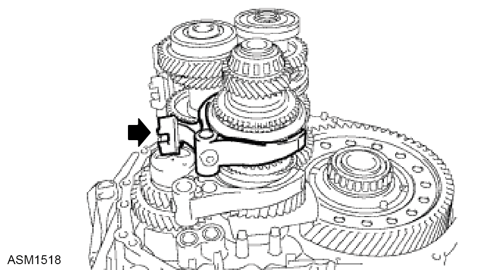
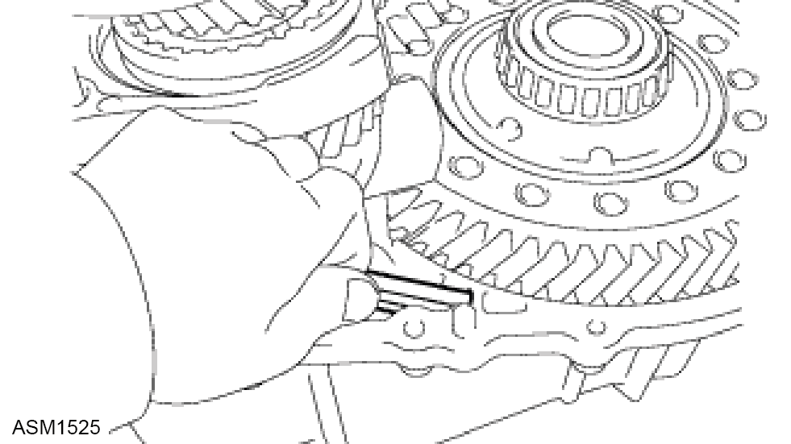
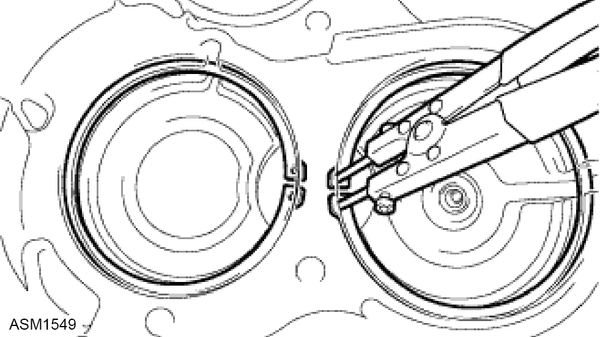
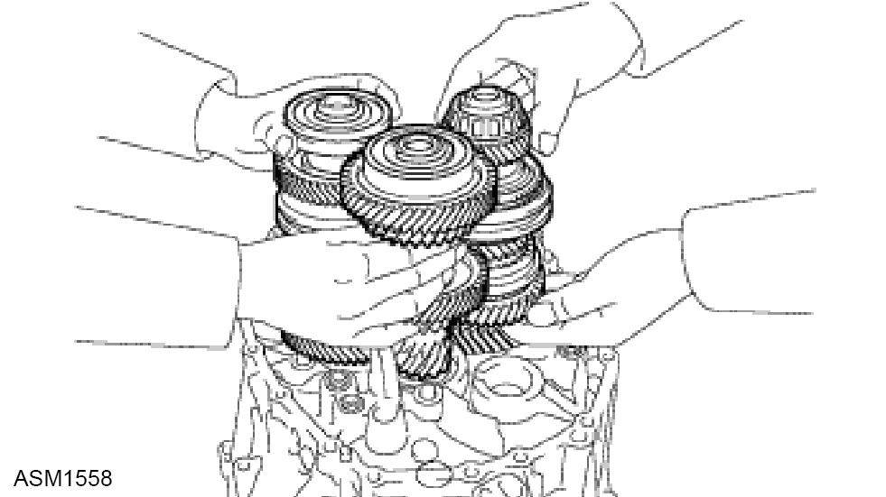
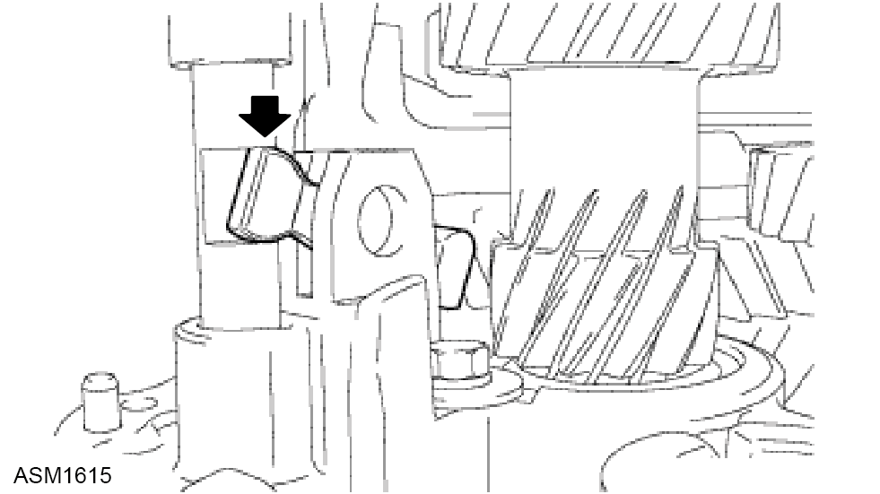

Transmission Assembly Overhaul - V6
Print
Operation Code: 47.03.01-04
Removal
- Remove transmission assembly. Refer to procedure.
Remove Clutch Release Fork Sub-Assembly
- Remove the clutch release fork with clutch release bearing from the manual transaxle case.
Remove Clutch Release Bearing Bearing Assembly
- Remove the clutch release bearing assembly and clutch release bearing hub from the release fork sub-assembly.
Remove Release Fork Support
- Remove the release fork support from the manual transaxle case.
Remove Clutch Release Fork Boot
- Remove the clutch release fork boot from the manual transaxle case.
Remove Floor Shift Control Lever Housing Support Bracket
- Remove the 3 bolts floor shift control lever housing support bracket from the manual transaxle assembly.
Remove Selecting Bell Crank Assembly
- Remove the 2 bolts and selecting bell crank assembly from the manual transmission case.
Remove Back up Light Switch Assembly
- Using SST 09816-30010, remove the back-up light switch assembly and gasket.
Remove no.1 Lock Ball Assembly
- Remove the No.1 lock ball assembly from the manual transmission case.
Remove no.2 Lock Ball Assembly
- Remove the No.2 lock ball assembly from the manual transmission case.
Remove Shift Gate Pin
- Remove the shift gate pin from the manual transmission case.
Remove Control shaft Cover
- Remove the 4 bolts and control shaft cover from the manual transmission case.
Remove Shift and Select Pin
- While pressing the shift and select pin (*1) in as far as it will go, pull the shift and select pin (*2).
- Remove the spring.
Remove O-Ring
- Remove the O-ring from the shift and select pin.
Remove Check Valve
- Remove the check valve and gasket from the manual transmission case.
Remove Temperature Sensor
- Remove the temperature sensor and gasket from the front transaxle case.
Remove Ball
- Using a hexagon wrench, remove the 4 shift detent ball plugs from the front transaxle case.
- Using a magnetic finger, remove the 4 spring seats and balls.
Remove Reverse Idler Gear Shaft Bolt
- Remove the reverse idler gear shaft bolt and reverse idler gear shaft gasket from the manual transmission case.
Remove Manual Transmission Case Plug
- Remove the manual transmission case plugs from the manual transmission case.
Remove Manual Transmission Case
- Remove the 6 bolts from the front transaxle case side.
- Remove the 12 bolts from the manual transmission case side.
- Use 2 snap ring pliers to keep the snap ring stretched and remove the manual transmission case.
Remove no.1 Oil Receiver Pipe
- Remove the No.1 receiver pipe from the manual transmission case.
 CAUTION: Do not damage the No.1 oil receiver pipe.
CAUTION: Do not damage the No.1 oil receiver pipe.
Remove Transmission Oil Separator
- Remove the 2 bolts and transmission oil separator from the manual transmission case.
Remove 1st and 2nd Shift Fork Shaft
- Remove the bolt of the 1st and 2nd shift fork shaft.
- Remove the 1st and 2nd shift fork shaft.
Remove 3rd and 4th Shift fork Shaft
- Using a pin punch and hammer, remove the slotted spring pin from the No.2 gear shift head.
- Using a pin punch and hammer, remove the slotted spring pin from the No.2 gear shaft fork.
- Remove the 3rd and 4th shift fork shaft and No.2 gear shift head.
Remove no.2 Gear Shift Fork
- Remove the No.2 gear shift fork from the No.1 output shaft assembly.
Remove no.5 Gear Shift Fork Shaft
- Using a screwdriver, remove the E-ring from the front transaxle case.
- Remove the pin from the front transaxle case.
- Remove the No.5 shift fork shaft from the front transaxle case.
- Using a pin punch and hammer, remove the slotted spring pin.
- Remove the No.3 gear shift head.
Remove no.1 Gear Shift Fork
- Remove the No.1 gear shift fork from the No.1 output shaft assembly.
Remove Shift Arm
- Remove the shift arm from the front transaxle case.
Remove Reverse Shift Fork Shaft
- Remove the bolt of the reverse shift fork shaft.
- Remove the reverse shift fork shaft.
Remove 5th and 6th Shift Fork Shaft
- Remove the bolt of the No.3 gear shift fork.
- Remove the 5th and 6th shift fork shaft.
Remove no.3 Shift Fork

- Remove the No.3 gear shift fork from the No.2 output shaft assembly.
Inspect Reverse Idler Gear Thrust Clearance
- Using a feeler gauge, measure the reverse idler gear thrust clearance.
NOTE: Standard clearance:
0.40 to 1.05 mm (0.0016 to 0.0413 in.).
NOTE: Maximum clearance:
1.05 mm (0.0413 in.).
- If the clearance exceeds the maximum, replace the reverse idler gear, needle roller bearing and reverse idler gear shaft.
Inspect Reverse Idler Gear Radial Clearance
- Using a dial indicator, measure the reverse idler gear radial clearance.
NOTE: Standard clearance:
0.015 to 0.048 mm (0.0006 to 0.0019 in.).
NOTE: Maximum clearance:
0.048 mm (0.0019 in.).
- If the clearance exceeds the maximum, replace the reverse idler gear, needle roller bearing and reverse idler gear shaft.
Remove Reverse Idler Gear
- Remove the reverse idler gear shaft by sliding and lifting it.
- Remove the reverse idler gear, needle roller bearing and reverse idler thrust washer from the reverse idler gear shaft.
Remove Input Shaft, no.1 Output Shaft and no.2 Output Shaft
- Remove the 3 shafts at the same time.
Remove Transmission Oil Separator
- Remove the 2 bolts and transmission oil separator from the front transaxle case.
Remove Front Differential Case Assembly
- Remove the differential case assembly from the front transaxle case.
Remove Transmission Magnet

- Remove the transmission magnet from the front trasaxle case.
Remove no.2 Output Shaft Rear Bearing Outer Race
- Using SST 09387-00041 (09387-02020), remove the No.2 output shaft front bearing outer race from the manual transmission case.
Remove Output Shaft Rear Bearing Shim
- Remove the output shaft rear bearing shim from the manual transmission case.
Remove Shift Fork Shaft Bearing
- Using SST 09612-65014 09387-00041 (09387-01021) 09527-20011, remove the 4 shift fork shaft bearings from the manual transmission case.
Remove Shift and Select Lever Shaft Needle Roller Bearing
- Using SST 09612-65014 09387-00041 (09387-01021), remove the shift and select lever shaft needle roller bearing from the manual transmission case.
Remove Input Shaft Rear Bearing Shaft Snap Ring
- Using snap ring pliers, remove the 2 snap rings.
Remove Input Shaft Front Bearing
- Remove the bolt from the front transaxle case.
- Using SST 09612-30012, remove the input shaft bearing from the front transaxle case.
Remove Transaxle Case Oil Seal
- Using a screwdriver, remove the transaxle case oil seal from the front transaxle case.
Remove output Shaft Front Bearing
- Remove the bolt from the front transaxle case.
- Using SST 09612-65014 (09612-01020), Remove the output shaft front bearing from the front transaxle case.
Remove Output Shaft Cover
- Remove the output shaft cover from the front transaxle case.
Remove no.2 Output Shaft Front Bearing Outer Race
- Using SST 09387-00041 (09387-02020), remove the No.2 output shaft front bearing outer race from the front transaxle case.
Remove Output shaft Cover
- Remove the output shaft cover from the front transaxle case.
Remove Shift Fork Shaft Bearing
- Using SST 09612-65014 09387-00041 (09487-01021), remove the 4 shift fork shaft bearings from the front transaxle case.
Remove Transmission Case Oil Seal
- Using a screwdriver, remove the transmission case oil seal from the manual transmission case.
Remove Front Differential Case Rear Outer Race Bearing
- Using a brass bar and a hammer, remove the front differential case rear outer race bearing and front differential case rear shim from the manual transmission case.
Remove Transaxle Case Oil Seal
- Using a screwdriver, remove the transaxle case oil seal from the front transaxle case.
Remove Front Differential Case Front Outer Race Bearing
- Using SST 09387-00041 (09387-02020), remove the front differential case front outer race bearing from the front transaxle case.
Install Shift Fork Shaft Bearing
- Using SST 09820-00031 and a press, press in the 4 shift fork shaft bearings.
Install Output Shaft Cover
- Install the output shaft cover, as shown in the illustration.
Install no.2 Output Shaft Front Bearing
- Using SST 09950-70010 (09951-07100, 09951-00710) and a hammer, install the No.2 output shaft front bearing.
Install Output shaft cover
- Install the output shaft cover, as shown in the illustration.
Install Output Shaft Front Bearing
- Coat a new output shaft bearing with gear oil, using SST09223-15020 and a press, install it.
Install Bearing Lock Plate Bolt
- Install the bearing lock plate bolt. Torque 11 Nm.
Install Transaxle Case Oil Seal
- Using SST 09950-60010 (09551-00580) and a hammer, install a new transaxle case oil seal to the front transaxle case.
NOTE: Drive in depth:
4.4 to 5.0 mm (0.1732 to 0.1969 in.).
- Coat a new oil seal lip with MP grease.
Install Input Shaft Front Bearing
- Coat a new input shaft front bearing with gear oil, using SST 09223-00010 and a press, install it.
Install Bearing Lock Plate Bolt
- Install the bearing lock plate bolt. Torque 11 Nm.
Install Input Shaft Rear Bearing Shaft Snap Ring

- Using snap ring pliers, install the 2 front bearing shift snap rings.
Install Shift and Select Lever Shaft Needle Roller Bearing
- Using SST 09285-76010 and a press, press in a new shift and select lever shaft needle roller bearing.
NOTE: Clearance:
177.8 to 178.7 mm (7.0000 to 7.0354 in.).
Install Shift Fork Shaft Bearing
- Using SST 09307-12010 09820-00031 and a press, press in 4 new shift fork shaft bearings.
NOTE: Clearance A:
168.2 to 169.3 mm (6.6220 to 6.6653 in.).
NOTE: Clearance B:
162.2 to 163.3 mm (6.3858 to 6.4291 in.).
Install Front Differential Case Front Tapered Roller Bearing
-
Using SST 09550-70010 (09951-00910, 09951-07150) and hammer, install the front differential case front tapered roller bearing.
Install Front Differential Case Rear Shim
- Install the front differential case rear shim into the manual transmission case.
Install Front Differential Case Rear Tapered Roller Bearing
- Using SST 09950-60010 (09551-00910) 09950-70010 (09551-07100) and a hammer, install the front differential case rear tapered roller bearing.
Adjust Differential Side Bearing Preload
- Install differential case assembly to the front transaxle case.
- Install the manual transmission case to the manual transaxle case with the 12 bolts. Torque 29 Nm.
- Install the 6 bolts of the manual transaxle case. Torque 29 Nm.
- Turn the differential case in both directions to get it to smooth.
- Using SST 09564-32011 and a torque wrench, measure the starting preload.
NOTE: New bearing preload:
1.00 to 2.49 N*m (10.2 to 25.4 kgf*cm, 8.85 to 22.04 in.*lbf).
- Select a new shim.
- Remove the manual transmission case from the front transaxle case.
- Remove the 18 bolts and manual transmission case.
Install no.2 Output Shaft Rear Bearing Outer Race
- Install the output shaft rear bearing shim onto the manual transmission case.
NOTE: When reusing the output shaft rear tapered roller bearing, first install a shim of the same thickness as the original. When installing a new output shaft front bearing, first select and install a shim which is thinner than the original.
-
Using SST 09950-60010 (09951-00650) 09950-70010 (09951-07200) and a press, press in the output shaft rear bearing outer race.
Adjust no.2 Output Shaft Rear Bearing Preload
- Install the No.2 output shaft and the differential case onto the front transaxle case.
- Install the manual transmission case and 12 bolts to the front transaxle case. Torque 29 Nm.
- Install the 6 bolts of the manual transaxle case side. Torque 29 Nm.
- Measure the No.2 output shaft rear bearing preload. Subtract the value of the differential side bearing preload from the measured No.2 output shaft rear bearing preload. Select a shim that will set the preload within the specified range below and install the shim.
NOTE: New bearing preload:
3.9 to 5.5 N*m (34 to 40 kgf*cm, 48 to 56 in.*lbf).
- Select a new shim.
- Remove the manual transmission case.
- Remove the 18 bolts and manual transmission case.
- Remove the output shaft assembly from the front transaxle case.
- Remove the differential case from the front transaxle case.
Install Transmission Magnet
- Clean and reinstall the transmission magnet onto the front transaxle case.
Install Front Differential Case Assembly
- Coat the differential case tapered roller bearing with gear oil, and install it onto the front transaxle case.
Install Transmission Oil Separator
- Install 2 bolts and transmission oil separator onto the front transaxle case. Torque 8.5 Nm.
Install Input Shaft, no.1 Output Shaft and no.2 Output Shaft

- Install the 3 shafts at the same time.
Install Reverse Idler Gear
- Coat the reverse idler gear, needle roller bearing and reverse idler thrust washer with MP grease, install them to the reverse idler gear shaft.
NOTE: Make sure that the protruding part on the reverse idler thrust washer is fitted into the groove of the reverse idler shaft.
- Install the reverse idler gear shaft by sliding and lifting it.
- Align the mark of the reverse idler gear shaft with the hole of the bolt.
Install Reverse Shift Fork
- Install the No.1 gear shift fork onto the No.4 hub sleeve.
Install no.3 Gear Shift Fork
- Install the No.1 gear shift fork onto the No.3 hub sleeve.
Install 5th and 6th Shift Fork Shaft
- Install the 5th and 6th shift fork shaft onto the front transaxle case.
- Install the bolt into the No.3 gear shift fork. Torque 20 Nm.
Install Reverse Shift Fork shaft
- Install the reverse shift fork shaft into the front transaxle case.
- Install the bolt into the No.4 gear shift fork. Torque 20 Nm.
Install Shift Arm
- Install the shaft arm into the front transaxle case.
Install no.1 Gear Shift Fork
- Install the No.1 gear shift fork onto the No.1 hub sleeve.
Install no.5 Gear Shift Fork Shaft
- Install the No.3 gear shift head to the No.5 gear shift fork shaft.
- Using a pin punch and hammer, drive the slotted pin into the No.3 gear shift head.
NOTE: Depth:
-0.5 to 0.5 mm (-0.0197 to 0.0197 in.).
- Install the No.5 gear shift fork shaft into the front transaxle case.

- Assemble the shift arm and No.5 gear shift fork shaft.
- Install the shift arm pin into the shift arm.
- Using a brass bar and hammer, install a new E-ring onto the shift arm pin.
Install no.2 Shift Fork
- Install the No.2 gear shift fork onto the No.2 hub sleeve.
Install 3rd and 4th Shift Fork shaft
- Install the No.3 gear shift head to the 3rd and 4th shift fork shaft.
- Install the 3rd and 4th shift fork shaft to the transmission case.
- Using a pin punch and hammer, drive a new slotted spring pin into the No.2 gear shift fork.
NOTE: Drive in depth :
-0.5 to 0.5 mm (-0.0197 to 0.0197 in.).
- Using a pin punch and hammer, drive the slotted spring pin into the No.3 gear shift head.
NOTE: Drive in depth :
-0.5 to 0.5 mm (-0.0197 to 0.0197 in.).
Install 1st and 2nd Shift Fork Shaft
- Install the 1st and 2nd shift fork shaft into the front transaxle case.
- Install the bolt onto the No.1 gear shift fork. Torque 20 Nm.
Install Transmission Oil Separator
- Install the transmission oil separator onto the manual transmission case with the 2 bolts. Torque 8.5 Nm
Install no.1 Oil Receiver Pipe
- Install the No.1 oil receiver pipe onto the manual transmission case.
CAUTION: Do not damage the No.1 oil receiver pipe.
Install Manual Transmission Case
- Apply FIPG to the manual transmission case, as shown in the illustration.
CAUTION: Assemble parts within 10 minutes of application. Otherwise, the packing (FIPG) material must be removed and reapplied.
NOTE: FIPG:
Part No. 08826-00090, THREE BOND 1281 or equivalent.
- Use 2 snap ring pliers to keep the snap ring stretched and install the manual transmission case.
- Install a bolt to the No.1 output shaft and lift the No.1 output shaft from the service hole. Make sure that the snap rings are positioned correctly in the bearing grooves by checking that the distances between the centers of snap ring holes are as shown in the illustration.
- Install the manual transmission case and 12 bolts to the front transaxle case. Torque 29 Nm.
- Install the manual transmission case and 6 bolts to the front transaxle case. Torque 29 Nm.
Install Reverse Idler Gear Shaft Bolt
- Coat the reverse idler gear shaft bolt with sealant, and install it with a new gasket. Torque 80 Nm.
NOTE: Sealant:
Part No. 08833-00080, THREE BOND 1344, LOCTITE 242 or equivalent.
Install Ball
- Coat the 4 shift detent ball plugs with sealant.
NOTE: Sealant:
Part No. 08833-00080, THREE BOND 1344, LOCTITE 242 or equivalent.
- Install the 4 balls, 4 spring seats and 4 shift detent ball plugs with using a hexagon wrench (6 mm). Torque 22 Nm.
Install Manual Transmission Case Plug
- Apply FIPG to the manual transmission case, as shown in the illustration.
NOTE: FIPG:
Part No. 08826-00090, THREE BOND 1281 or equivalent.
- Coat the transmission case plug with sealant.
NOTE: Sealant:
Part No. 08833-00080, THREE BOND 1344, LOCTITE 242 or equivalent.
- Install the manual transmission case plug into the manual transmission case. Case plug 1.
Torque 55 Nm. Case plug 2.
Torque 22 Nm.
Install O-Ring
- Coat the O-ring with the grease, and install it into the shift and select pin.
Install Shift and Select Pin
- Install the spring.
- While pressing the shift and select pin (*1) in as far as it will go, push in the shift and select pin (*2).
Install Check Valve
- Install the check valve with a new gasket.
Install Temperature Sensor
- Install the temperature sensor with a new gasket.
Install Transmission Case Oil Seal
- Coat a new oil seal lip with MP grease.
- Using SST and a hammer, install the transmission case oil seal.
CAUTION: Do not damage the oil seal lip.
NOTE: Drive in depth:
-0.5 to 0.5 mm (-0.0197 to 0.0197 in.).
Install Transaxle Case Oil Seal
- Coat a new oil seal lip with MP grease.
- Using SST and a hammer, install the transaxle case oil seal.
CAUTION: Do not damage the oil seal lip.
NOTE: Drive in depth:
-0.5 to 0.5 mm (-0.0197 to 0.0197 in.).
Install Control Shaft Cover
- Align the 4 shift fork shafts as shown in the illustration.
- Apply FIPG to the manual transmission case, as shown in the illustration.
NOTE: FIPG:
Part No. 08826-00090, THREE BOND 1281 or equivalent.
- Coat the 4 bolts with sealant.
NOTE: Sealant:
Part No. 08833-00080, THREE BOND 1344, LOCTITE 242 or equivalent.
- Install the shift and select lever shaft onto the manual transmission case with the 4 bolts. Torque 19 Nm.
Install Shift Gate Pin
- Coat the shift gate pin with sealant.
NOTE: Sealant:
Part No. 08833-00080, THREE BOND 1344, LOCTITE 242 or equivalent.
- Install the shift gate pin onto the manual transmission case. Torque 30 Nm.
Install no.2 Lock Ball Assembly
- Coat the No.2 lock ball assembly with sealant.
NOTE: Sealant:
Part No. 08833-00080, THREE BOND 1344, LOCTITE 242 or equivalent.
- Install the No.2 lock ball assembly onto the manual transmission case. Torque 29 Nm.
Install no.1 Lock Ball Assembly
- Coat the No.1 lock ball assembly with sealant.
NOTE: Sealant:
Part No. 08833-00080, THREE BOND 1344, LOCTITE 242 or equivalent.
- Install the No.1 lock ball assembly onto the manual transmission case. Torque 39 Nm.
Install Back-up Light Switch Assembly
- Install the back-up light switch assembly onto the manual transmission case using SST 09816-30010 . Torque 40 Nm.
Install Selecting Bell Crank Assembly
- Coat the 2 bolts with sealant, install it with selecting bell crank assembly to the manual transmission case. Torque 20 Nm.
NOTE: Sealant:
Part No. 08833-00080, THREE BOND 1344, LOCTITE 242 or equivalent.
Install Floor Shift Control Lever Housing Support Bracket
- Install the floor shift control lever housing support bracket onto the manual transaxle case with the 3 bolts. Torque 17 Nm.
NOTE: Sealant:
Part No. 08833-00080, THREE BOND 1344, LOCTITE 242 or equivalent.
Install Clutch Release Fork Boot
- Install the clutch release fork boot onto the manual transmission case.
Install Release Fork Support
- Using a deep socket wrench, install the release fork support to the front transaxle case. Torque 37 Nm.
Install Clutch Release Bearing Assembly
- Apply the release hub grease to the release fork and release bearing assembly contact, release fork and push rod contact, and release fork pivot points.
NOTE: Sealant:
Part No. 08887-01806, RELEASE HUB GREASE or equivalent.
- Apply clutch sealant grease to the spline coupling part.
NOTE: Sealant:
Part No. 08887-01706, CLUTCH SPLINE GREASE or equivalent.
Install Clutch Release Fork Sub-Assembly
- Install the bearing to the release fork, and then install them to the transaxle assembly.